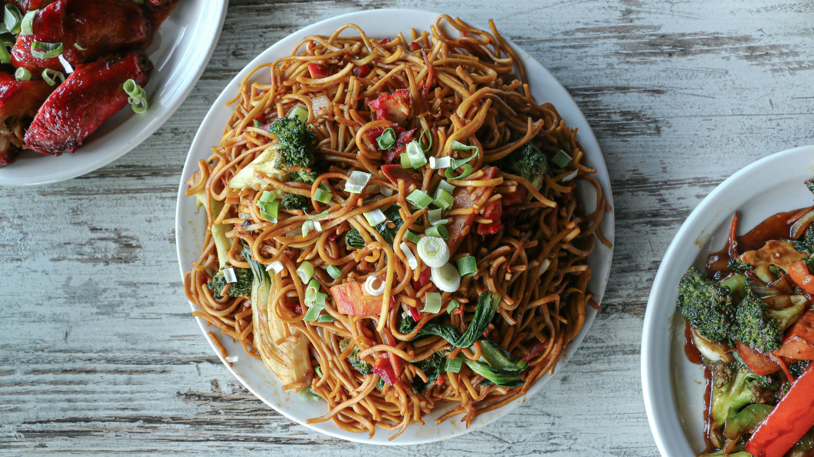

Chowmein
Home

Description
Chow Mein is a popular Chinese stir-fried noodle dish loaded with crunchy vegetables, tender protein (like chicken, shrimp, or tofu), and savory sauces. It’s quick, flavorful, and customizable—perfect for a delicious weeknight meal!
Ingredients
- 200g chow mein noodles
- 2 tbsp oil
- 2 cloves garlic
- 1-inch ginger
- 1 cup protein
- 2 cups mixed veggies
- 2 tbsp soy sauce
- 1 tbsp oyster sauce
- 1 tsp vinegar
- ½ tsp sugar
- Salt & pepper
- Green onions
Steps
- Cook noodles as per package instructions, drain, and toss with a little oil to prevent sticking.
- Heat oil in a wok/pan, sauté garlic and ginger until fragrant.
- Add protein and stir-fry until cooked. Remove and set aside.
- Stir-fry veggies on high heat until crisp-tender (2-3 mins).
- Add noodles, protein, soy sauce, oyster sauce, vinegar, sugar, salt, and pepper. Toss well.
- Garnish with green onions and serve hot!